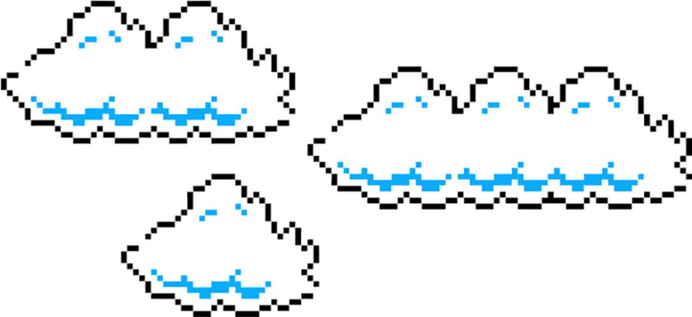
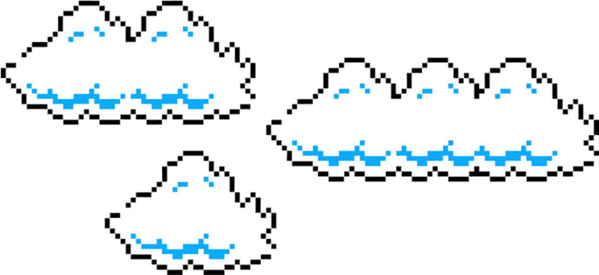
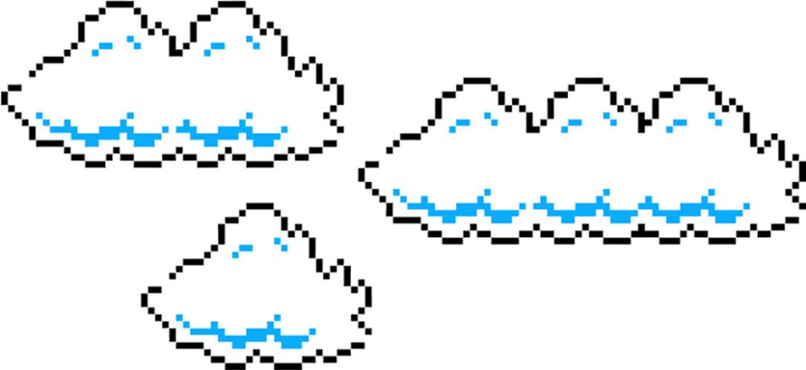
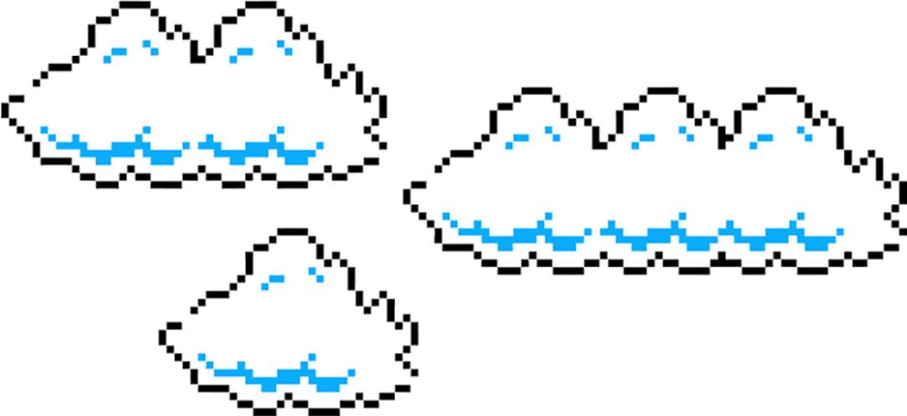

A My Lady, ou Lady dos miseráveis, espero que isso não seja interpretado como algo ofensivo; eram meus elogios a essa guerreira. Bem, ela nasceu em 1914, lá em uma pequena cidade de Minas Gerais. Ela teve uma infância difícil, imagina uma criança pobre em uma cidade do interior. Ela teve poucas oportunidades e, principalmente, de estudar, mas mesmo assim era uma menina muito curiosa e determinada, mesmo sempre vivendo perto de sofrimento e luta pra viver.
Clique no Livro para baixar "Quarto de Despejo" em PDF
Bem, isso aqui é um projeto meu, eu diria o primeiro jogo desse livro :3